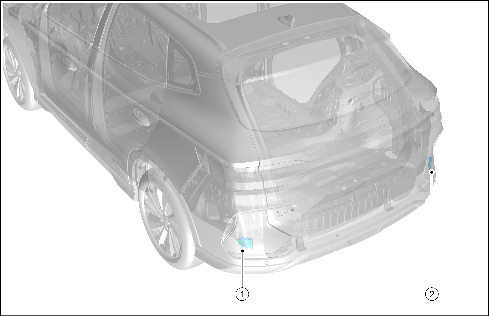
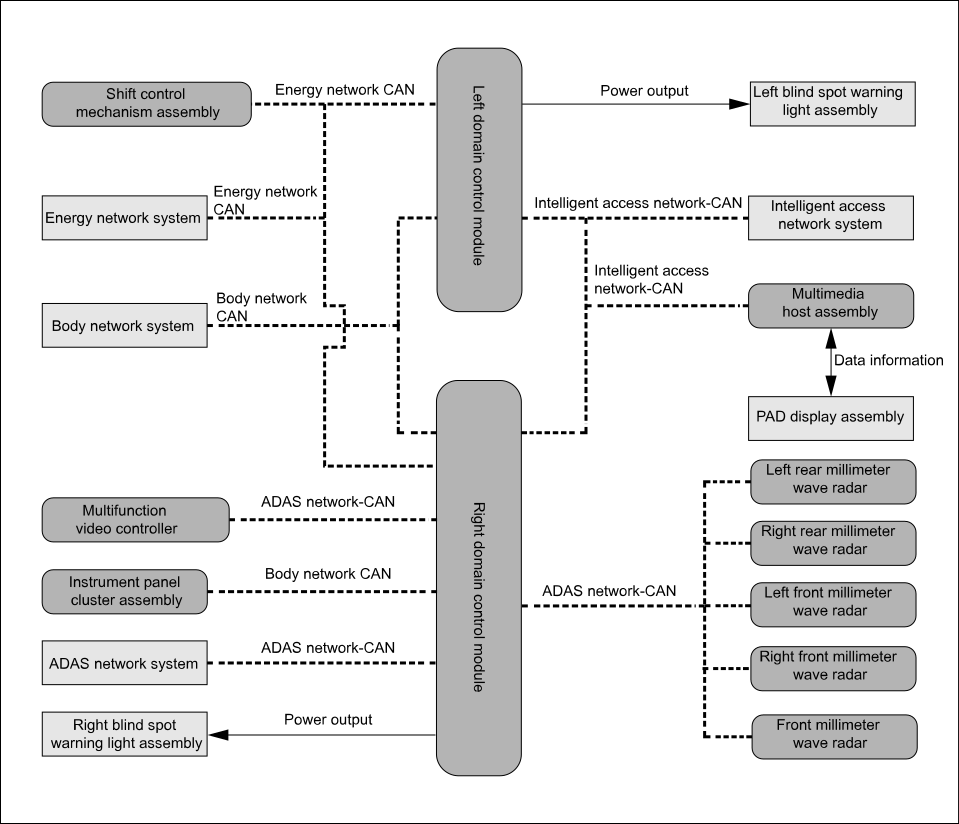

|
SN. |
Name |
|---|---|
|
1 |
Left rear millimeter wave radar |
|
2 |
Right rear millimeter wave radar |
The blind spot detection system includes five functions: blind spot detection, lane change assistance, rear crossing warning, rear impact warning and door opening warning. According to the judgment of the traffic conditions by the rear millimeter wave radar, the driver will be timely reminded to drive carefully.
Blind spot detection: during driving (＞30km/h), when the rear millimeter wave radar detects that there is a vehicle in the blind area of the outside rearview mirror, the corresponding alarm indicator will be on. If the turn signal on the same side is turned on at this time, the warning light on the outside rearview mirror will flash, reminding you that changing lanes may be dangerous.
Lane change assistance: during driving (＞30km/h), when the rear millimeter wave radar finds that there are fast approaching vehicles in adjacent lanes, the corresponding alarm indicator will be on. If the turn signal on the same side is turned on at this time, the warning light on the outside rearview mirror will flash, reminding you that changing lanes may be dangerous.
Reverse cross traffic warning: the reverse cross traffic warning system, through the rear millimeter wave radar, detects the moving vehicles on the left and right sides when the vehicle is reversing and gives an alarm when there is an impact risk. In the process of reversing, if the system determines that the vehicle may collide with approaching vehicles on the left and right sides, the corresponding outside rearview mirror indicator will flash to remind the driver.
Rear impact warning: during driving (＞5km/h), when the rear millimeter wave radar detects that the rear vehicle is approaching quickly and there is a risk of impact, the alarm indicators on the instrument and the outside rearview mirrors will flash to remind the driver.
Door opening warning: when the vehicle is stopped and the door is about to be opened, the door opening warning system will identify the nearby targets at the rear and side of the vehicle through the rear millimeter wave radar, and turn on the alarm indicator on the outside rearview mirror, so as to avoid accidents.
The rear millimeter wave radar mainly includes radar sensor and the corresponding control module. The system determines the position information of the rear and side objects based on the radar transmitting wave, the object reflected wave, and the current vehicle state. If a risk of lane change or reversing impact is found, the driver will be reminded by audible and visual alarm.
